Historical and Architectural Sites
Khajuraho
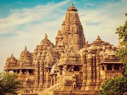
- Khajuraho Group of Monuments (UNESCO World Heritage Site)
- Western Group of Temples
- Eastern Group of Temples
- Kandariya Mahadev Temple
Sanchi
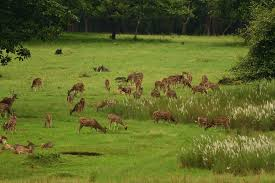
- Sanchi Stupa (UNESCO World Heritage Site)
- Great Stupa
- Ashoka Pillar
- Sanchi Museum
Gwalior
.jpeg)
- Gwalior Fort
- Jai Vilas Palace
- Sas Bahu Temples
- Teli Ka Mandir
- Gujari Mahal Archaeological Museum
Mandu
- Mandu Fort
- Jahaz Mahal
- Hindola Mahal
- Hoshang Shah's Tomb
- Jami Masjid
Bhimbetka
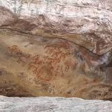
- Bhimbetka Rock Shelters (UNESCO World Heritage Site)
- Rock paintings dating back to the Stone Age
Orchha
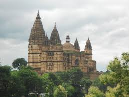
- Orchha Fort Complex
- Jahangir Mahal
- Raj Mahal
- Chaturbhuj Temple
- Ram Raja Temple
Chanderi
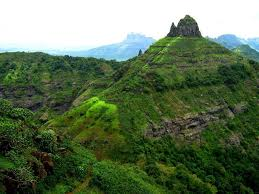
- Chanderi Fort
- Chanderi Fort Palace
- Koshak Mahal
- Jama Masjid
Bhopal
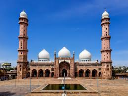
- Taj-ul-Masajid
- Upper Lake (Bhojtal)
- Bhimbetka Caves
- State Museum of Madhya Pradesh
- Van Vihar National Park
Wildlife and National Parks
Kanha National Park
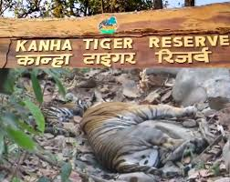
Bandhavgarh National Park
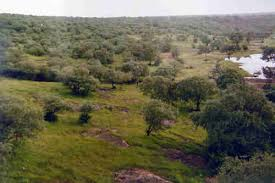
Pench National Park
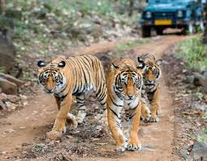
Satpura National Park
Kanha National Park
Religious and Spiritual Sites
Maheshwar
- Maheshwar Fort
- Khushal Das Mandir
- Ahilya Fort
- Rehwa Society
Udaipur
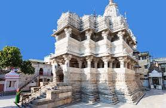
- Udaipur Temple Complex
- Shri Raj Rajeshwari Temple
- Jama Masjid
- Shri Pataleshwar Temple
Orchha
- Orchha Fort Complex
- Jahangir Mahal
- Raj Mahal
- Chaturbhuj Temple
- Ram Raja Temple
Lakes and Waterfalls
Upper Lake (Bhojtal)
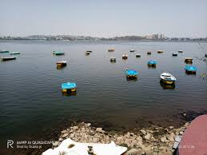
- Boating and Water Sports
- Scenic Views and Walkways
Pachmarhi
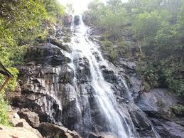
- Waterfalls and Caves
- Scenic Beauty
Patalpani Waterfall
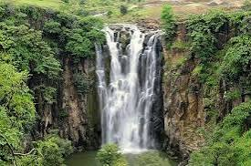
- Scenic Waterfall
- Hiking Trails
Tribal and Cultural Attractions
Jhabua
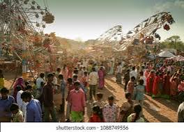
- Tribal Villages and Markets
Bhimbetka
- A Glimpse into Tribal Culture and Rock Art
Other Attractions
Khajuraho Dance Festival
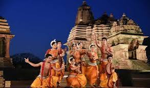
- Annual Cultural Festival Showcasing Classical Indian Dance Forms
Maihar
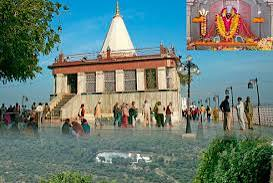
- Maihar Devi Temple (Sharda Devi Temple)
Raisen
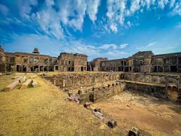
- Raisen Fort
- Hinglajgarh Fort
Datia
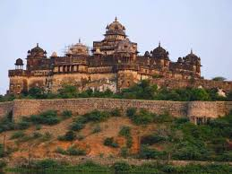
- Datia Palace
- Pitambara Peeth
Dhar
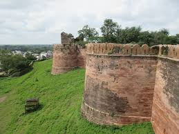
- Dhar Fort
- Bhoj Shala